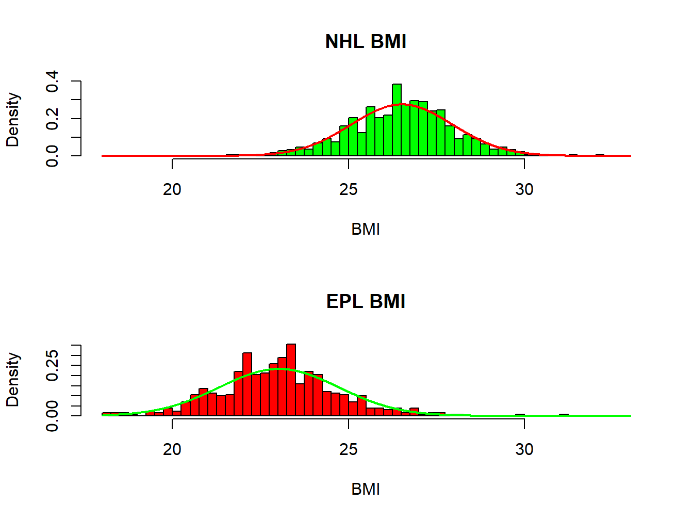
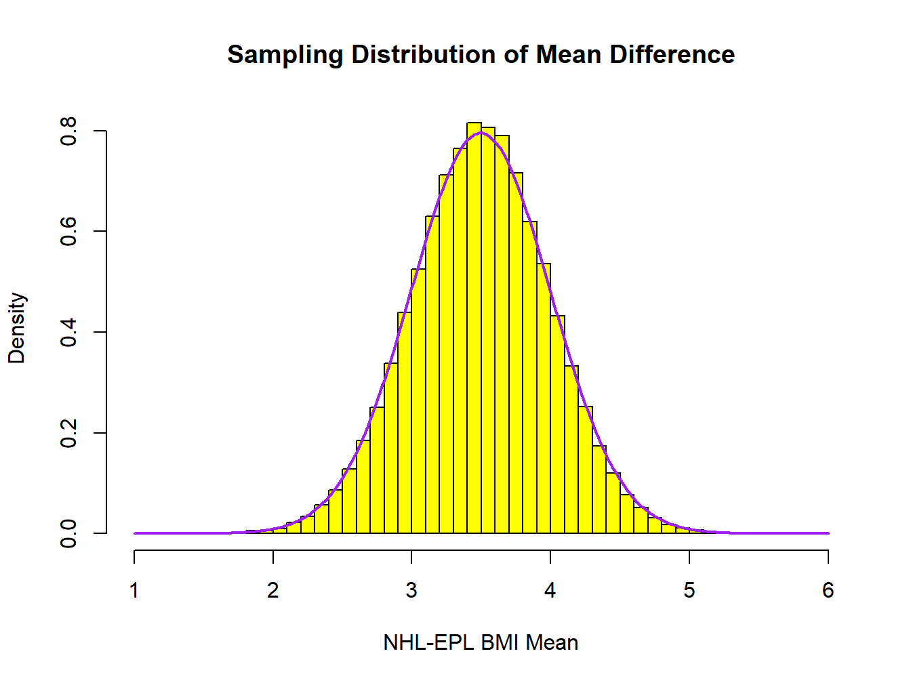
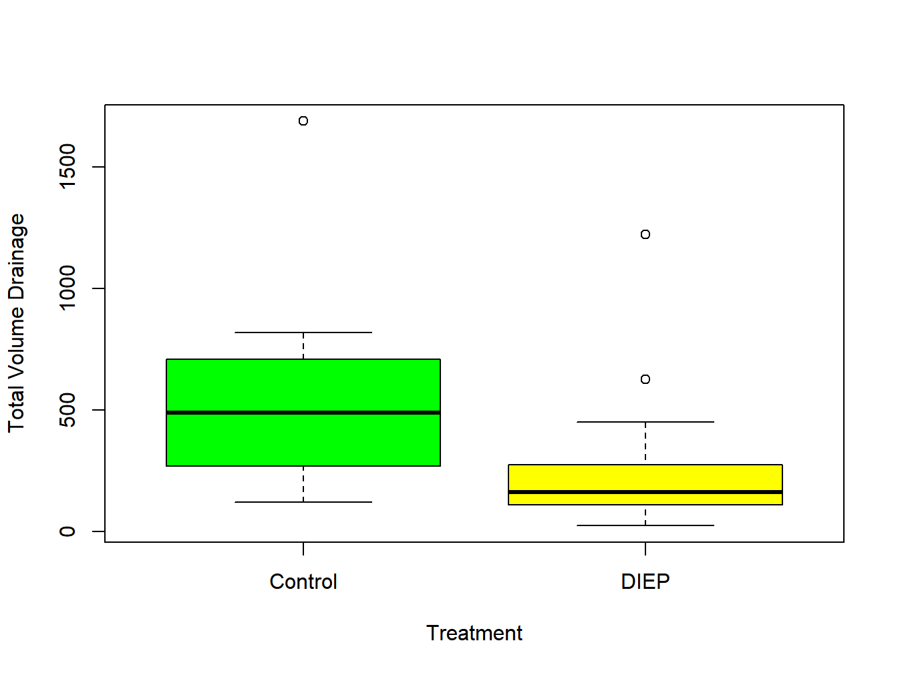

Chapter 6 Comparing Two Population Means
While estimating the mean or median of a population is important, many more applications involve comparing two or more treatments or populations. There are two commonly used designs: independent samples and paired samples. Independent samples are used in controlled experiments when a sample of experimental units is obtained, and randomly assigned to one of two treatments or conditions. That is, each unit receives only one of the two treatments. These are often referred to as Completely Randomized or Parallel Groups or Between Subjects designs in various fields of study. Paired samples can involve the same experimental unit receiving each treatment, or units being matched based on external criteria, then being randomly assigned to the two treatments within pairs. These are often referred to as Randomized Block or Crossover or Within Subjects designs.
In observational studies, independent samples can be taken from two existing populations, or elements within two populations can be matched based on external criteria and observed. In each case, the goal is to make inferences concerning the difference between the two means or medians based on sample data.
There are two considerations when choosing the appropriate test: (1) Are the population distributions of measurements approximately normal? and (2) Was the study conducted as an independent samples (parallel groups) or paired samples (crossover) design? The appropriate test for each situation is given in Table 6.1. We will describe each test with the general procedure and an example.
The two tests based on non–normal data are called nonparametric tests and are based on ranks, as opposed to the actual measurements. When distributions are skewed, samples can contain measurements that are extreme (usually large). These extreme measurements can cause problems for methods based on means and standard deviations, but will have less effect on procedures based on ranks.
| Completely Randomized Design | Randomized Block Design | |
|---|---|---|
| Normal Data | 2–Sample \(t\)–test | Paired \(t\)–test |
| Non-Normal Data | Wilcoxon Rank Sum test | Wilcoxon Signed–Rank Test |
6.1 Independent Samples
In the case of independent samples, assume we sample \(n_1\) units or subjects in treatment 1 which has a population mean response \(\mu_1\) and population standard deviation \(\sigma_1\). Further, a sample of \(n_2\) elements from treatment 2 is obtained where the population mean is \(\mu_2\) and standard deviation is \(\sigma_2\). Measurements within and between samples are independent. Regardless of the distributions of the individual measurements, we have the following results based on linear functions of random variables, in terms of the means of the two random samples. The notation used is \(Y_{1j}\) is the \(j^{th}\) unit (replicate) from sample 1, and \(Y_{2j}\) is the \(j^{th}\) unit (replicate) from sample 2. In the case of independent samples, these two random variables are independent.
\[ \overline{Y}_1 = \frac{\sum_{j=1}^{n_1}Y_{1j}}{n_1} = \sum_{j=1}^{n_1}\left(\frac{1}{n_1}\right)Y_{1j} \quad \Rightarrow \quad E\{\overline{Y}_1\} =\mu_1 \quad V\{\overline{Y}_1\} = \frac{\sigma^2_1}{n_1} \quad E\{\overline{Y}_2\} =\mu_2 \quad V\{\overline{Y}_2\} = \frac{\sigma^2_2}{n_2} \]
\[ E\{\overline{Y}_1 - \overline{Y}_2\} = E\{\overline{Y}_1\} - E\{\overline{Y}_2\} = \mu_1 - \mu_2 \] \[ V\{\overline{Y}_1 - \overline{Y}_2\} = \sigma^2_{\overline{Y}_1 - \overline{Y}_2} =V\{\overline{Y}_1\} + V\{\overline{Y}_2\} -2 \mbox{COV}\{\overline{Y}_1,\overline{Y}_2\}=\frac{\sigma^2_1}{n_1}+\frac{\sigma^2_2}{n_2} + 0= \frac{\sigma^2_1}{n_1}+\frac{\sigma^2_2}{n_2} \] \[ SE\{\overline{Y}_1 - \overline{Y}_2\} = \sigma_{\overline{Y}_1 - \overline{Y}_2} = \sqrt{\frac{\sigma^2_1}{n_1}+\frac{\sigma^2_2}{n_2}} \]
If the data are normally distributed, \(\overline{Y}_1 - \overline{Y}_2\) is also normally distributed. If the data are not normally distributed, \(\overline{Y}_1 - \overline{Y}_2\) will be approximately normally distributed in large samples. As in the case of a single mean, how large of samples are needed depends on the shape of the underlying distributions.
6.1.1 Large-Sample tests
The problem arises again that the variances will be unknown and must be estimated. For large sample sizes \(n_1\) and \(n_2\), we have the following approximation for the sampling distribution of the following quantity, where the sample variances replace the true population variances.
\[ \frac{\left(\overline{Y}_1-\overline{Y}_2\right) - \left(\mu_1 - \mu_2\right)}{\sqrt{\frac{S_1^2}{n_1} + \frac{S_2^2}{n_2}}} \stackrel{\cdot}{\sim} N(0,1) \]
\[ \Rightarrow \quad P\left(\left(\overline{Y}_1-\overline{Y}_2\right)-z_{\alpha/2}\sqrt{\frac{S_1^2}{n_1} + \frac{S_2^2}{n_2}} \leq \mu_1 - \mu_2 \leq \left(\overline{Y}_1-\overline{Y}_2\right)+z_{\alpha/2}\sqrt{\frac{S_1^2}{n_1}+\frac{S_2^2}{n_2}}\right) \approx 1-\alpha \]
Example 6.1: NHL and EPL Players’ BMI
Body Mass Indices for all National Hockey League (NHL) and English Premier League (EPL) football players for the 2014/5 seasons were obtained. Identifying the NHL as league 1 and EPL as league 2 we have the following population parameters given in Table 6.2.
A plot of the two population histograms, along with normal densities is given in Figure 6.1. Both distributions are well approximated by the normal distribution, with the NHL having a substantially higher mean and EPL having a slightly higher standard deviation.
| \(N\) | \(\mu\) | \(\sigma\) | |
|---|---|---|---|
| NHL BMI (i=1) | 748 | 26.514 | 1.449 |
| EPL BMI (i=2) | 526 | 23.019 | 1.711 |

Figure 6.1: Distributions of Body Mass Index for NHL and EPL players
We take 100000 independent random samples of sizes \(n_1=n_2=20\) from the two populations, each time computing and saving \(\overline{y}_1, s_1, \overline{y}_2, s_2\). Note that these are not particularly large samples and this a precursor to adjustments made for small samples.
| \(\mu\) | \(\sigma\) | \(SE\{\bar{y}\}\) | \(\bar{\bar{y}}\) | \(s_{\bar{y}}\) | |
|---|---|---|---|---|---|
| NHL | 26.514 | 1.449 | 0.324 | 26.515 | 0.320 |
| EPL | 23.019 | 1.711 | 0.383 | 23.019 | 0.375 |
| NHL-EPL | 3.495 | 2.242 | 0.501 | 3.495 | 0.493 |

Figure 6.2: Distribution of sample mean difference of Body Mass Index for NHL and EPL players, with n1=n2=20
| P(Cover|z) | P(Cover|t) | \(V\{\bar{Y}_1-\bar{Y}_2\}\) | \(s^2_{\bar{y}_1-\bar{y}_2}\) | |
|---|---|---|---|---|
| 0.94682 | 0.95382 | 0.251411 | 0.2518422 |
A histogram of the 100000 sample mean differences and the superimposed Normal density with mean \(\mu_1-\mu_2=3.495\) and standard error \(SE\left\{\overline{Y}_1-\overline{Y}_2\right\}=0.501\) (calculation given below) is shown in Figure 6.2.
Table 6.3 gives the theoretical and empirical results for the NHL and EPL means and their differences.
The mean of the 100000 mean differences \(\overline{y}_1-\overline{y}_2\) is 3.495 with standard deviation (standard error) 0.493. Both are very close to their theoretical values (as they should be).
Next we compute the following quantities (and intervals), counting the proportions of samples for which each contains \(\mu_1-\mu_2\), and its average estimated variance (squared standard error). These are given in Table 6.4.
\[ z: \left(\overline{y}_1-\overline{y}_2\right) \pm 1.96 \sqrt{\frac{s_1^2}{20}+\frac{s_2^2}{20}} \qquad \qquad t: \left(\overline{y}_1-\overline{y}_2\right) \pm 2.024 \sqrt{\frac{s_1^2}{20}+\frac{s_2^2}{20}} \] \[\mu_1-\mu_2=26.514 - 23.019 = 3.495 \] \[ SE\left\{\overline{Y}_1-\overline{Y}_2\right\}=\sqrt{\frac{\sigma_1^2}{n_1}+\frac{\sigma_2^2}{n_2}} = \sqrt{\frac{1.449^2}{20}+\frac{1.711^2}{20}} = 0.501 \]
The mean of the 100000 sample mean differences is 3.495 compared to the theoretical mean difference of 3.495. The standard deviation of the sample mean differences is 0.493, compared to the theoretical standard error of 0.501.
Of the intervals constructed from each sample mean difference and its estimated standard error (using \(s_1,s_2\) in place of \(\sigma_1,\sigma_2\)), the interval contains the true mean difference (3.495) for 94.682% of the samples, very close to the nominal 95% coverage rate. If we replace \(z_{.025}=1.96\) with the more appropriate \(t_{.025,n_1+n_2-2}=t_{.025,38}=2.0244\), the coverage rate increases to 95.382%. Note that virtually all software packages will automatically use \(t\) in place of \(z\), however, there are various statistical methods that always use the \(z\) case.
The average of the estimated variance of \(\overline{y}_1-\overline{y}_2\): \(s_1^2/n_1 + s_2^2/n_2\) is 0.2518, while its theoretical value is \(\sigma_1^2/n_1 + \sigma_2^2/n_2=0.2514\). Note that the variance of the estimated difference is unbiased, not so for the standard error.
\[ \nabla \]
This logic leads to a large-sample test and Confidence Interval regarding \(\mu_1-\mu_2\) once estimates \(\overline{y}_1, s_1, \overline{y}_2, s_2\) have been observed in an experiment or observational study. The Confidence Interval and test are given below. Typically, \(z_{\alpha/2}\) is replaced with \(t_{\alpha/2,\nu}\), where \(\nu\) is the degrees of freedom, which depends on assumptions involving the variances (see below).
\[\mbox{Large Sample } (1-\alpha)100\% \mbox{ CI for } \mu_1-\mu_2: \left(\overline{y}_1-\overline{y}_2\right) \pm z_{\alpha/2} \sqrt{\frac{s_1^2}{n_1} + \frac{s_2^2}{n_2}} \]
\[ \mbox{2-tail: } H_0: \mu_1 - \mu_2 = \Delta_0 \quad H_A:\mu_1 - \mu_2 \neq \Delta_0 \quad TS: z_{obs}=\frac{\left(\overline{y}_1-\overline{y}_2\right) - \Delta_0}{\sqrt{\frac{s_1^2}{n_1} + \frac{s_2^2}{n_2}}} \] \[RR: |z_{obs}|\geq z_{\alpha/2} \quad P=2P(Z\geq|z_{obs}|) \]
\[ \mbox{Upper tail: } H_0: \mu_1 - \mu_2 \leq \Delta_0 \quad H_A:\mu_1 - \mu_2 > \Delta_0 \quad TS: z_{obs}=\frac{\left(\overline{y}_1-\overline{y}_2\right) - \Delta_0}{\sqrt{\frac{s_1^2}{n_1} + \frac{s_2^2}{n_2}}} \] \[RR: z_{obs}\geq z_{\alpha} \quad P=P(Z\geq z_{obs}) \]
\[ \mbox{Lower tail: } H_0: \mu_1 - \mu_2 \geq \Delta_0 \quad H_A:\mu_1 - \mu_2 < \Delta_0 \quad TS: z_{obs}=\frac{\left(\overline{y}_1-\overline{y}_2\right) - \Delta_0}{\sqrt{\frac{s_1^2}{n_1} + \frac{s_2^2}{n_2}}} \] \[RR: z_{obs}\leq -z_{\alpha} \quad P=P(Z\leq z_{obs}) \]
Example 6.2: Gender Classification from Physical Measurements
A study in forensics used measurements of the length and breadth of the scapula from samples of 95 male and 96 female Thai adults to classify them by gender (Peckmann et al. 2017). The measurements were length and breadth of glenoid cavity (LGC and BGC, in mm), respectively. Summary data for the two samples for BGC are given below.
\[ n_m=95 \quad \overline{y}_m=27.87 \quad s_m=2.04 \qquad \qquad n_f=96 \quad \overline{y}_f=23.77 \quad s_f=1.85 \]
\[ \overline{y}_m-\overline{y}_f=27.87-23.77=4.10 \qquad \qquad \widehat{SE}\left\{\overline{Y}_m-\overline{Y}_f\right\}=\sqrt{\frac{2.04^2}{95}+\frac{1.85^2}{96}}=0.282 \]
A 95% Confidence Interval for the population mean difference, \(\mu_m-\mu_f\) is given below.
\[ \left(\overline{y}_m-\overline{y}_f\right) \pm z_{.025}\sqrt{\frac{s_1^2}{n_1} + \frac{s_2^2}{n_2}} \equiv 4.10 \pm 1.960(0.282) \equiv 4.10 \pm 0.553 \equiv (3.55,4.65) \]
The interval is very far away from 0, making us very confident that the population mean is higher for males than females. To test whether the population means differ (which they clearly do from the Confidence Interval), we conduct the following 2-tailed test with \(\alpha=0.05\).
\[ H_0:\mu_m-\mu_f = 0 \quad H_A:\mu_m-\mu_f\neq 0 \quad T.S.: z_{obs}=\frac{4.10-0}{0.282} = 14.54 \] \[R.R.: |z_{obs}| \geq 1.960 \quad P=2P(Z\geq 14.54)\approx 0 \]
\[ \nabla \]
6.1.2 Small Sample Tests with Normal Data
In the case where the two populations of measurements are normally distributed, the 2–sample \(t\)–test is used. Note that it also works well for reasonably large sample sizes when the measurements are not normally distributed. This procedure is very similar to the large–sample test from the previous section, where only the critical values for the rejection region changes.
In this section, we consider the two cases of equal variances \(\left(\sigma_1^2=\sigma_2^2\right)\) and unequal variances \(\left(\sigma_1^2 \neq \sigma_2^2\right)\).
6.1.2.1 2–Sample Student’s \(t\)–test for Normal Data with Equal Variances
This procedure is similar to the large–sample test, except the critical values for the rejection regions and Confidence Intervals are based on the \(t\)-distribution with \(\nu=n_1+n_2-2\) degrees of freedom and the variances are “pooled” (see below). We will assume the two population variances are equal in the 2-sample Student’s \(t\)-test. If they are not, simple adjustments can be made to obtain an appropriate test, which will be given in the next subsection. We then “pool” the 2 sample variances to get an estimate of the common variance \(\sigma^2=\sigma^2_1=\sigma^2_2\). This estimate, which we will call \(s^2_p\) is calculated as follows (it is a weighted average of the two variances).
\[ s^2_p = \frac{(n_1-1)s^2_1 + (n_2-1)s^2_2}{n_1 +n_2 -2}. \]
The tests of hypothesis concerning \(\mu_1 - \mu_2\) are conducted as follow.
2-sided test \[H_0:\mu_1-\mu_2=0 \quad H_A:\mu_1-\mu_2 \neq 0 \quad \mbox{T.S.: } t_{obs} = \frac{\left(\overline{y}_1 -\overline{y}_2\right )} {\sqrt{s^2_p\left(\frac{1}{n_1} + \frac{1}{n_2}\right)}}\] \[\mbox{R.R.: } |t_{obs}|>t_{\alpha/2,n_1+n_2-2} \qquad P=2P\left(t_{n_1+n_2-2}>|t_{obs}|\right)\] 1-sided (upper-tail) test \[H_0:\mu_1-\mu_2=0 \quad H_A:\mu_1-\mu_2 > 0 \quad \mbox{T.S.: } t_{obs} = \frac{\left(\overline{y}_1 -\overline{y}_2\right )} {\sqrt{s^2_p\left(\frac{1}{n_1} + \frac{1}{n_2}\right)}}\] \[\mbox{R.R.: } t_{obs}>t_{\alpha,n_1+n_2-2} \qquad P=P\left(t_{n_1+n_2-2}>t_{obs}\right)\]
Example 6.3: Comparison of Two Instructional Methods
A study was conducted (Rusanganwa 2013) to compare two instructional methods: multimedia (treatment 1) and traditional (treatment 2) for teaching physics to undergraduate students in Rwanda. Subjects were assigned at random to the two treatments. Each subject received only one of the two methods. The numbers of subjects who completed the courses and took two exams were \(n_1=13\) for the multimedia course and \(n_2=19\) for the traditional course. The primary response was the post-course score on an examination. We will conduct the test \(H_0:\mu_1-\mu_2=0\) vs \(H_A:\mu_1 - \mu_2 \neq 0\), where the null hypothesis is no difference in the effects of the two methods. The summary statistics are given below.
\[ n_1=13 \quad \overline{y}_1=11.10 \quad s_1=3.47 \qquad \qquad n_2=19 \quad \overline{y}_2=8.35 \quad s_2=2.45 \]
First, compute \(s_p^2\), the pooled variance:
\[ s_p^2 = \frac{(n_1 -1)s_1^2 +(n_2 -1)s_2^2}{n_1 + n_2 -2} = \frac{(13-1)(3.47)^2 + (19-1)(2.45)^2}{13+19-2} = \frac{252.54}{30} = 8.42 \quad (s_p=2.90)\]
Now conduct the (2-sided) test as described above with \(\alpha=0.05\) significance level:
\[ H_0:\mu_1-\mu_2=0 \qquad H_A:\mu_1-\mu_2 \neq 0 \] \[ \mbox{T.S.: } t_{obs} = \frac{(\overline{y}_1 -\overline{y}_2 )} {\sqrt{s^2_p\left(\frac{1}{n_1} + \frac{1}{n_2}\right)}} = \frac{(11.10-8.35)} {\sqrt{8.42\left(\frac{1}{13} + \frac{1}{19}\right)}} =\frac{2.75}{1.04} =2.633\] \[\mbox{R.R.: } |t_{obs}|\geq t_{\alpha/2,n_1+n_2-2}=t_{.05/2,13+19-2}=t_{.025,30} =2.042 \] \[ P=2P\left(t_{30}\geq |t_{obs}|\right)=2P\left(t_{30}\geq 2.633\right) = 0.0132 \]
Based on this test, reject \(H_0\) (for any \(\alpha \geq .0132\)), and conclude that the population mean post course scores differ under these two conditions. The 95% Confidence Interval for \(\mu_1-\mu_2\) is \(2.75 \pm 2.042(1.04) \equiv (0.62,4.88)\) which does not contain 0.
Below we use generated samples that have the same means and standard deviation and use the t.test function in R to conduct the 2-sample \(t\)-test. The first output gives the 2-sided test, the second one gives the upper-tailed test.
## score trt.y
## 1 8.20 1
## 2 14.03 1##
## Two Sample t-test
##
## data: score by trt.y
## t = 2.6323, df = 30, p-value = 0.01327
## alternative hypothesis: true difference in means between group 1 and group 2 is not equal to 0
## 95 percent confidence interval:
## 0.6163295 4.8826179
## sample estimates:
## mean in group 1 mean in group 2
## 11.100000 8.350526##
## Two Sample t-test
##
## data: score by trt.y
## t = 2.6323, df = 30, p-value = 0.006634
## alternative hypothesis: true difference in means between group 1 and group 2 is greater than 0
## 95 percent confidence interval:
## 0.9766925 Inf
## sample estimates:
## mean in group 1 mean in group 2
## 11.100000 8.350526Note that when we conducted the upper-tail test, R computes an 1-sided Confidence Interval of the following form (note the difference in the lower bounds is due to rounding in calculations).
\[ \left[(\overline{y}_1 -\overline{y}_2 )-t_{.05,n_1+n_2-2}\widehat{SE}\left\{\overline{y}_1 -\overline{y}_2 \right\},\infty\right] \equiv \left[2.75-1.697(1.04),\infty\right] \equiv \left[0.985,\infty\right] \]
\[ \nabla \]
6.1.2.2 Welch’s Test for Normal Data with Unequal Variances
When the population variances are not equal, there is no justification for pooling the sample variances to better estimate the common variance \(\sigma^2\). In this case the estimated standard error of \(\overline{Y}_1-\overline{Y}_2\) is \(\sqrt{s_1^2/n_1 + s_2^2/n_2}\). An adjustment is made to the degrees of freedom for an approximation to a \(t\)-distribution of the \(t\)-statistic.
\[ \frac{\left(\overline{Y}_1-\overline{Y}_2\right) - \left(\mu_1-\mu_2\right)}{\sqrt{\frac{S_1^2}{n_1} + \frac{S_2^2}{n_2}}} \stackrel{\cdot}{\sim} t_{\nu} \qquad \qquad \nu= \frac{\left[\frac{S_1^2}{n_1} + \frac{S_2^2}{n_2}\right]^2}{\left[\frac{(S_1^2/n_1)^2}{n_1-1} + \frac{(S_2^2/n_2)^2}{n_2-1}\right]} \]
The test is referred to as Welch’s Test, and the degrees of freedom Satterthwaite’s Approximation. Statistical software packages automatically compute the approximate degrees of freedom. The approximation extends to more complex models as well. Once the samples are obtained, and the sample means and standard deviations are computed, the \((1-\alpha)100\%\) Confidence Interval for \(\mu_1-\mu_2\) is computed as follows.
\[ \left(\overline{y}_1 - \overline{y}_2\right) \pm t_{\alpha/2,\nu} \sqrt{\frac{s_1^2}{n_1} + \frac{s_2^2}{n_2}} \qquad \qquad \nu= \frac{\left[\frac{s_1^2}{n_1} + \frac{s_2^2}{n_2}\right]^2}{\left[\frac{(s_1^2/n_1)^2}{n_1-1} + \frac{(s_2^2/n_2)^2}{n_2-1}\right]} \]
The test of hypothesis concerning \(\mu_1 - \mu_2\) is conducted as follows.
2-sided Test \[ H_0:\mu_1-\mu_2=0 \qquad H_A:\mu_1-\mu_2 \neq 0 \qquad \mbox{T.S.: } t_{obs} = \frac{\left(\overline{y}_1 -\overline{y}_2\right)} {\sqrt{\frac{s_1^2}{n_1} + \frac{s_2^2}{n_2}}}\] \[ \mbox{RR: } |t_{obs}| \geq t_{\alpha/2,\nu} \qquad P=2P\left(t_{\nu}\geq |t_{obs}|\right)\]
Upper-Tail Test \[ H_0:\mu_1-\mu_2=0 \qquad H_A:\mu_1-\mu_2 > 0 \qquad \mbox{T.S.: } t_{obs} = \frac{\left(\overline{y}_1 -\overline{y}_2\right)} {\sqrt{\frac{s_1^2}{n_1} + \frac{s_2^2}{n_2}}}\] \[ \mbox{RR: } t_{obs} \geq t_{\alpha,\nu} \qquad P=P\left(t_{\nu}\geq t_{obs}\right)\]
Example 6.4: Abdominal Quilting to Reduce Drainage in Breast Reconstruction Surgery
A study considered the effect of abdominal suture quilting on abdominal drainage during breast reconstruction surgery (Liang et al. 2016). A group of \(n_1=27\) subjects (controls) received the standard DIEP procedure, while a group of \(n_2=26\) subjects (treatment) received the DIEP procedure along with the suture quilting. The response measured was the amount of abdominal drainage during the surgery (in ml). The summary data are given below, note that the sample standard deviations are substantially different, and these are relatively large sample sizes. Side-by-side box plots are given in Figure 6.3. The results of direct computations for Student’s and Welch’s tests are given in Table 6.5 and from use of the t.test in the R output below.
\[ \mbox{Control Group: } n_1=27\quad \overline{y}_1=527.78 \quad s_1=322.07 \] \[ \mbox{DIEP Group: } n_2=26\quad \overline{y}_2=238.31 \quad s_2=242.66\]
## trt age totvol
## 1 1 26 550
## 2 1 29 160
Figure 6.3: Side-by-Side Boxplots of total volume of leakage during breast reconstruction surgery for Control and DIEP groups
| \(\bar{y}_1\) | \(\bar{y}_2\) | diff | df | SE{diff} | t | P(>|t|) | LB | UB | |
|---|---|---|---|---|---|---|---|---|---|
| Equal Var | 527.778 | 238.308 | 289.47 | 51.00 | 78.560 | 3.685 | 0.001 | 131.754 | 447.187 |
| Unequal Var | 527.778 | 238.308 | 289.47 | 48.25 | 78.145 | 3.704 | 0.001 | 132.371 | 446.569 |
##
## Two Sample t-test
##
## data: totvol by trt.f
## t = 3.6847, df = 51, p-value = 0.0005546
## alternative hypothesis: true difference in means between group Control and group DIEP is not equal to 0
## 95 percent confidence interval:
## 131.7535 447.1866
## sample estimates:
## mean in group Control mean in group DIEP
## 527.7778 238.3077##
## Welch Two Sample t-test
##
## data: totvol by trt.f
## t = 3.7043, df = 48.25, p-value = 0.0005452
## alternative hypothesis: true difference in means between group Control and group DIEP is not equal to 0
## 95 percent confidence interval:
## 132.3707 446.5695
## sample estimates:
## mean in group Control mean in group DIEP
## 527.7778 238.3077The estimated mean difference, standard error, and degrees of freedom are computed below.
\[ \overline{y}_1-\overline{y}_2= 527.78 - 238.31 = 289.47 \qquad \widehat{SE}\{\overline{Y}_1-\overline{Y}_2\} = \sqrt{\frac{322.07^2}{27}+\frac{242.66^2}{26}}=78.14 \]
\[ \nu= \frac{\left[\frac{322.07^2}{27} +\frac{242.66^2}{26}\right]^2}{\left[\frac{(322.07^2/27)^2}{27-1} + \frac{(242.66^2/26)^2}{26-1}\right]}=48.25 \qquad \qquad t_{.025,48.25}=2.010 \]
The 95% Confidence Interval for \(\mu_1-\mu_2\) and test statistic and p-value for testing \(H_0:\mu_1-\mu_2=0\) versus \(H_A:\mu_1-\mu_2\neq 0\) are given below. There is strong evidence that the suture quilting reduces blood loss during surgery.
\[ 95\% \mbox{ CI for } \mu_1-\mu_2: \quad 289.47 \pm 2.010(78.14) \equiv 289.47 \pm 157.06 \equiv (132.41,446.53) \]
\[ \mbox{T.S.: } t_{obs}=\frac{289.47}{78.14}=3.705 \qquad \qquad P=2P\left(t_{48.25}\geq 3.705\right)=.0005 \]
\[ \nabla \]
6.2 Paired Sample Designs
In paired samples (aka crossover or within subjects) designs, units (subjects) receive each treatment, thus acting as their own control. They may also have been matched based on some characteristics. Procedures based on these designs take this into account, and are based in determining differences between treatments after “removing” variability in the subjects (or pairs). When it is possible to conduct them, paired sample designs are more powerful than independent sample designs in terms of being able to detect a difference (reject \(H_0\)) when differences truly exist (\(H_A\) is true), for a fixed sample size and when measurements within subjects or pairs are positively correlated.
In paired sample designs, each subject (or pair) receives each treatment. In the case of two treatments being compared, we compute the difference in the two measurements within each subject (or pair), and test whether or not the population mean difference is 0. When the differences are normally distributed, we use the paired \(t\)-test to determine if differences exist in the mean response for the two treatments. Then this is simply a 1-sample problem on the differences.
Let \(Y_1\) be the score in condition 1 for a randomly selected subject, and \(Y_2\) be the score in condition 2 for the subject. Let \(D=Y_1-Y_2\) be the difference. Further, consider the following assumptions and their corresponding results. Note that the differences across subjects (or pairs) are considered to be independent.
\[ E\{Y_1\}=\mu_1 \qquad V\{Y_1\}=\sigma_1^2 \qquad E\{Y_2\}=\mu_2 \qquad V\{Y_2\}=\sigma_2^2 \qquad \mbox{COV}\{Y_1,Y_2\} = \sigma_{12} \]
\[ \Rightarrow \quad E\{D\} = \mu_1-\mu_2=\mu_D \qquad \qquad V\{D\} = \sigma_D^2=\sigma_1^2 + \sigma_2^2 - 2\sigma_{12} \]
\[ \overline{D} = \frac{\sum_{i=1}^n D_i}{n} \qquad E\{\overline{D}\} = \mu_D \qquad V\{\overline{D}\}=\sigma_{\overline{D}}^2=\frac{\sigma_D^2}{n} \qquad SE\{\overline{D}\}=\sigma_{\overline{D}}=\frac{\sigma_D}{\sqrt{n}} \]
\[ \mbox{For large } n {: } \qquad \overline{D} \stackrel{\cdot}{\sim} N\left(\mu_D, SE\{\overline{D}\}=\frac{\sigma_D}{\sqrt{n}}\right) \]
Normality holds for any sample size if the individual measurements (or the differences) are normally distributed.
It should be noted that in the paired case \(n_1=n_2\) by definition. That is, there will always be equal sized samples when the experiment is conducted properly. There will be \(n=n_1=n_2\) differences, even though there were \(2n=n_1+n_2\) measurements made. From the \(n\) differences obtained in a sample, the mean and standard deviation are obtained, and will labeled as \(\overline{d}\) and \(s_d\).
\[ \overline{d} = \frac{\sum_{i=1}^n d_i}{n} \qquad \qquad s_d^2 = \frac{\sum_{i=1}^n (d_i - \overline{d})^2}{n-1} \qquad \qquad s_d=\sqrt{s_d^2} \qquad \qquad \widehat{SE}\{\overline{D}\}= s_{\overline{D}}=\frac{s_d}{\sqrt{n}} \]
A \((1-\alpha )100\%\) Confidence Interval for the population mean difference \(\mu_D\) is given below.
\[ \overline{d} \pm t_{\alpha/2,n-1} \widehat{SE}\{\overline{D}\} \quad \equiv \quad \overline{d} \pm t_{\alpha/2,n-1} \frac{s_d}{\sqrt{n}} \]
The test is conducted as follows.
2-Sided Test \[H_0:\mu_1-\mu_2=\mu_D=0 \qquad H_A:\mu_D \neq 0 \qquad \mbox{T.S.: } t_{obs} = \frac{\overline{d}}{\widehat{SE}\{\overline{D}\}}=\frac{\overline{d}}{\left(\frac{s_d}{\sqrt{n}}\right)}\] \[\mbox{R.R.: } |t_{obs}|\geq t_{\alpha/2,n-1} \qquad P=2P(t_{n-1} \geq |t_{obs}|)\] Upper-Tail Test \[H_0:\mu_1-\mu_2=\mu_D=0 \qquad H_A:\mu_D > 0 \qquad \mbox{T.S.: } t_{obs} = \frac{\overline{d}}{\widehat{SE}\{\overline{D}\}}=\frac{\overline{d}}{\left(\frac{s_d}{\sqrt{n}}\right)}\] \[\mbox{R.R.: } t_{obs}\geq t_{\alpha,n-1} \qquad P=P(t_{n-1} \geq t_{obs})\]
Example 6.5: Comparison of Two Analytic Methods for Determining Wine Isotope
A study was conducted to compare two analytic methods for determining \(^{87}Sr/^{86}Sr\) isotope ratios in wine samples (Durante et al. 2015). These are used in geographic tracing of wine. The two methods are microwave (method 1) and low temperature (method 2). The data, and the differences (microwave - lowtemp) are given in Table 6.6.
## sample_id microwave lowtemp
## 1 1 0.708660 0.708610
## 2 2 0.708762 0.708792## n dbar sd
## diff=(microwave-lowtemp)*100000 18 0.3667 2.4646| sample_id | microwave | lowtemp | diff |
|---|---|---|---|
| 1 | 0.708660 | 0.708610 | 5.0e-05 |
| 2 | 0.708762 | 0.708792 | -3.0e-05 |
| 3 | 0.708725 | 0.708734 | -9.0e-06 |
| 4 | 0.708668 | 0.708662 | 6.0e-06 |
| 5 | 0.708675 | 0.708670 | 5.0e-06 |
| 6 | 0.708702 | 0.708713 | -1.1e-05 |
| 7 | 0.708647 | 0.708661 | -1.4e-05 |
| 8 | 0.708677 | 0.708667 | 1.0e-05 |
| 9 | 0.709145 | 0.709176 | -3.1e-05 |
| 10 | 0.709017 | 0.709024 | -7.0e-06 |
| 11 | 0.708820 | 0.708814 | 6.0e-06 |
| 12 | 0.709402 | 0.709364 | 3.8e-05 |
| 13 | 0.709374 | 0.709378 | -4.0e-06 |
| 14 | 0.709508 | 0.709517 | -9.0e-06 |
| 15 | 0.709070 | 0.709063 | 7.0e-06 |
| 16 | 0.709061 | 0.709079 | -1.8e-05 |
| 17 | 0.709096 | 0.709039 | 5.7e-05 |
| 18 | 0.708720 | 0.708700 | 2.0e-05 |
##
## Paired t-test
##
## data: wi1$microwave and wi1$lowtemp
## t = 0.6312, df = 17, p-value = 0.5363
## alternative hypothesis: true mean difference is not equal to 0
## 95 percent confidence interval:
## -8.589364e-06 1.592270e-05
## sample estimates:
## mean difference
## 3.666667e-06As there are \(n=18\) differences, the degrees of freedom are \(n-1=17\). The \(95\%\) Confidence Interval for \(\mu_D\) is computed below, where \(t_{.025,17}=2.110\). First, the mean and standard deviation of the differences are multiplied by 100000 (remove first 5 0s after decimal) to reduce the risk of calculation error. This is legitimate as the mean and standard deviation are of the same units. This leads to \(\overline{d}^*=0.3667\) and \(s_d^*=2.46466\).
\[ 0.3667 \pm 2.110 \frac{2.4646}{\sqrt{18}} \equiv 0.3667 \pm 2.110(0.5809) \equiv 0.3667 \pm 1.2257 \equiv \quad (-0.8590,1.5924) \]
In the original units the interval is of the form of (-.00000859,.000015924). Since the interval contains 0, there is no evidence that one method tends to score higher (or lower) than the other on average.
The test of whether there is a difference in the true mean determinations between the two methods (with \(\alpha=0.05\)) is conducted by completing the steps outlined below.
\[H_0:\mu_1-\mu_2=\mu_D=0 \qquad H_A:\mu_D \neq 0 \qquad \mbox{T.S.: } t_{obs} = \frac{0.3667}{\left(\frac{2.4646}{\sqrt{18}}\right)}= \frac{0.3667}{0.5809}=0.631\] \[\mbox{R.R.: } |t_{obs}|>t_{\alpha/2,n-1}=t_{.025,17}=2.110 \qquad P = 2P\left(t_{17} \geq |0.631|\right)=.5364\]
There is definitely no evidence that the two methods differ in terms of determinations of wine isotope ratios.
The R code and output using the t.test is given at the end of the previous R chunk.
\[ \nabla \]
6.3 Nonparametric Tests
When data are highly skewed, the extreme measurements can have large impacts on the group means and standard deviations. Two rank-based tests that are not effected by outliers are the Wilcoxon Rank-Sum Test for independent samples and the Wilcoxon Signed-Rank Test for paired samples. Note that for independent samples there is an alternative, but mathematically equivalent Mann-Whitney U-Test that is often reported. These tests require special tables for small samples and have normal approximations for larger samples. We briefly describe them here and use R for the computations.
6.3.1 Independent Samples - Wilcoxon Rank-Sum Test
For the Rank-Sum test, let the sample sizes for groups 1 and 2 be \(n_1\) and \(n_2\), respectively. Let the combined sample size be \(n_. = n_1 + n_2\).
- Rank the measurements across treatments from 1 (smallest) to \(n_.\) (largest), adjusting for ties by giving the average rank for tied cases.
- Obtain the rank sums for each treatment: \(T_1\) and \(T_2\) with \(T_1+T_2=1+2+\ldots + n_. = \frac{n_.\times\left(n_.+1\right)}{2}\)
- The test involves looking for discrepancies between \(T_1\) and \(T_2\) with what would be expected under the hypothesis of equal medians, namely \(E\left\{T_i\right\}= \frac{n_i\times\left(n_.+1\right)}{2}\)
- Special tables or statistical software packages can be used for the tests.
Example 6.6: Abdominal Quilting to Reduce Drainage in Breast Reconstruction Surgery
With sample sizes of \(n_1=27\) and \(n_2=26\) being well above the limits of standard tables, we will use R for the test. The rank sums are \(T_1=962.5\) and \(T_2 = 468.5\), respectively, with expected values under the hypothesis of equal medians being 729 and 702, respectively. These actual values are much higher than expected for the control group and much lower than expected for the treatment group. The approximate p-value is very small, implying a higher median for Controls than Treated patients.
## trt age totvol
## 1 1 26 550
## 2 1 29 160## Warning in wilcox.test.default(x = DATA[[1L]], y = DATA[[2L]], ...): cannot
## compute exact p-value with ties##
## Wilcoxon rank sum test with continuity correction
##
## data: totvol by trt.f
## W = 584.5, p-value = 3.384e-05
## alternative hypothesis: true location shift is not equal to 0\[ \nabla \]
6.3.2 Paired Samples - Wilcoxon Signed Rank Test
When the data are paired, differences are taken within the pairs as in the paired t-test. Then the absolute values of the differences are ranked from smallest (1) to largest (\(n\)), again with tied differences receiving average ranks. The rank sum for positive differences \(\left(T^+\right)\) and negative differences \(\left(T^-\right)\) are obtained with \(T^+ + T^- = 1 + \cdots + n = n(n+1)/2\). Then \(T^+\) and \(T^-\) can be compared with their expected values which are both \(n(n+1)/4\). Again, special tables are available, or statistical software packages can be used for the test.
Example 6.7: Comparison of Two Analytic Methods for Determining Wine Isotope
For the wine samples, there were \(n=18\) pairs analyzed by the microwave and low temperature methods. The ranks sums for the positive and negative differences were \(T^+ = 87.5\) and \(T^- = 83.5\), respectively, each with expected value equal to \(18(19)/4 = 85.5\). The observed values are very close to their expected values under the hypothesis of equal medians. The p-value is .9479, implying no evidence of difference in location for the two analytic methods.
## Warning in wilcox.test.default(wi1$microwave, wi1$lowtemp, paired = TRUE):
## cannot compute exact p-value with ties##
## Wilcoxon signed rank test with continuity correction
##
## data: wi1$microwave and wi1$lowtemp
## V = 87.5, p-value = 0.9479
## alternative hypothesis: true location shift is not equal to 0\[ \nabla \]